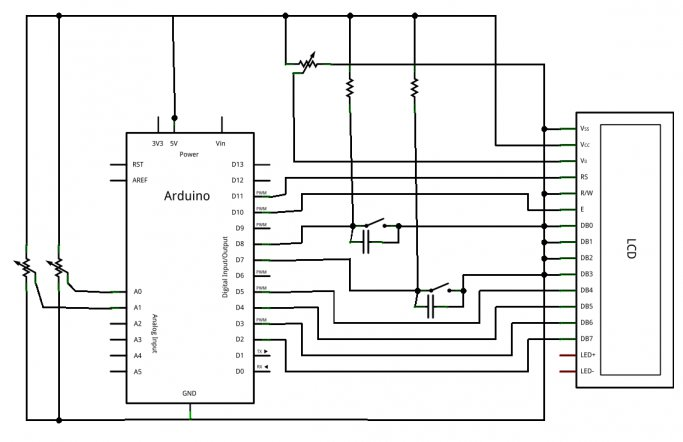
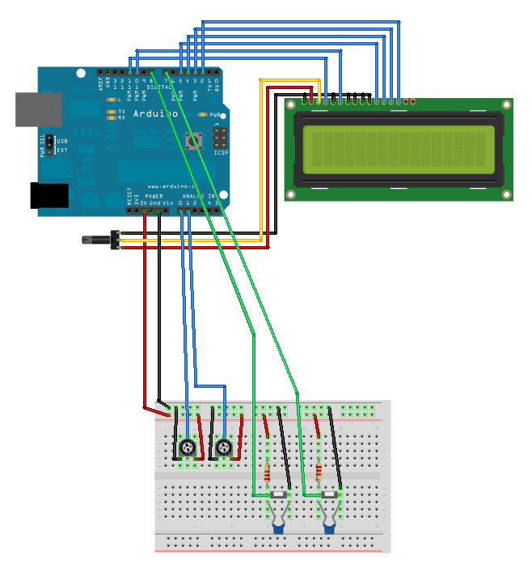

Chers lecteurs et lectrices, savez-vous qu’il est toujours aussi difficile de faire une introduction et une conclusion pour chaque chapitre ? C’est pourquoi je n’ai choisi ici que de dire ceci :
amusez-vous bien avec les LCD !

Sommaire
Consigne
Dans ce TP, on se propose de mettre en place un système de supervision, comme on pourrait en retrouver dans un milieu industriel (en plus simple ici, bien sûr !) ou dans d’autres applications. Le but sera d’afficher des informations sur l’écran LCD en fonction d’évènements qui se passent dans le milieu extérieur. Ce monde extérieur sera représenté par les composants suivants :
- Deux boutons, qui pourraient représenter par exemple deux barrières infrarouges et dont le signal reçu passe de 1 à 0 lorsqu’un objet passe devant.
- Deux potentiomètres. Le premier sert de "consigne" et est réglé par l’utilisateur. Le second représentera un capteur. À titre d’exemple, sur la vidéo à la suite vous verrez un potentiomètre rotatif qui représentera la consigne et un autre sous forme de glissière qui sera le capteur.
- Enfin, une LED rouge nous permettra de faire une alarme visuelle. Elle sera normalement éteinte mais si la valeur du capteur dépasse celle de la consigne alors elle s’allumera.
Comportement de l’écran
L’écran que j’utilise ne propose que 2 lignes et 16 colonnes. Il n’est donc pas possible d’afficher toutes les informations de manière lisible en même temps. On se propose donc de faire un affichage alterné entre deux interfaces. Chaque interface sera affichée pendant cinq secondes à tour de rôle. La première affichera l’état des boutons. On pourra par exemple lire :
Bouton G : ON
Bouton D : OFF
La seconde interface affichera la valeur de la consigne et celle du capteur. On aura par exemple :
Consigne : 287
Capteur : 115
(Sur la vidéo vous verrez "gauche / droite" pour symboliser les deux potentiomètres, chacun fait comme il veut/peut :P ).
Enfin, bien que l’information "consigne/capteur" ne s’affiche que toutes les 5 secondes, l’alarme (la LED rouge), elle, doit être visible à tout moment si la valeur du capteur dépasse celle de la consigne. En effet, imaginez que cette alarme représentera une pression trop élevée, ce serait dommage que tout explose à cause d’un affichage 5 secondes sur 10 ! :P Je pense avoir fait le tour de mes attentes ! Je vous souhaite un bon courage, prenez votre temps, faites un beau schéma/montage/code et à bientôt pour la correction !
Correction
Le montage
Vous en avez l’habitude maintenant, je vais vous présenter le schéma puis ensuite le code. Pour le schéma, je n’ai pas des milliers de commentaires à faire. Parmi les choses auxquelles il faut être attentif se trouvent :
- Des condensateurs de filtrage pour éviter les rebonds parasites créés par les boutons
- Mettre les potentiomètres sur des entrées analogiques
- Brancher la LED dans le bon sens et ne pas oublier sa résistance de limitation de courant
Et en cas de doute, voici le schéma (qui est un peu fouillis par endroit, j’en suis désolé) !


Le code
Là encore, je vais reprendre le même schéma de fonctionnement que d’habitude en vous présentant tout d’abord les variables globales utilisées, puis les initialisations pour continuer avec quelques fonctions utiles et la boucle principale.
Les variables utilisées
Dans ce TP, beaucoup de variables vont être déclarées. En effet, il en faut déjà 5 pour les entrées/sorties (2 boutons, 2 potentiomètres, 1 LED), j’utilise aussi deux tableaux pour contenir et préparer les messages à afficher sur la première et deuxième ligne. Enfin, j’en utilise 4 pour contenir les mesures faites et 4 autres servant de mémoire pour ces mesures. Ah et j’oubliais, il me faut aussi une variable contenant le temps écoulé et une servant à savoir sur quelle "interface" nous sommes en train d’écrire. Voici un petit tableau résumant tout cela ainsi que le type des variables.
| Nom | Type | Description |
|---|---|---|
| boutonGauche |
const int
|
Broche du bouton de gauche |
| boutonDroite |
const int
|
Broche du bouton de droite |
| potentiometreGauche |
const int
|
Broche du potar "consigne" |
| potentiometreDroite |
const int
|
Broche du potar "alarme" |
| ledAlarme |
const int
|
Broche de la LED d’alarme |
| messageHaut [ 16 ] |
char
|
Tableau représentant la ligne du haut |
| messageBas [ 16 ] |
char
|
Tableau représentant la ligne du bas |
| etatGauche |
int
|
État du bouton de gauche |
| etatDroite |
int
|
État du bouton de droite |
| niveauGauche |
int
|
Conversion du potar de gauche |
| niveauDroite |
int
|
Conversion du potar de droite |
| etatGauche_old |
int
|
Mémoire de l’état du bouton de gauche |
| etatDroite_old |
int
|
Mémoire de l’état du bouton de droite |
| niveauGauche_old |
int
|
Mémoire de la conversion du potar de gauche |
| niveauDroite_old |
int
|
Mémoire de la conversion du potar de droite |
| temps |
unsigned long
|
Pour mémoriser le temps écoulé |
| ecran |
boolean
|
Pour savoir sur quelle interface on écrit |
Le setup
Maintenant que les présentations sont faites, nous allons passer à toutes les initialisations. Le setup n’aura que peu de choses à faire puisqu’il suffira de régler les broches en entrées/sorties et de mettre en marche l’écran LCD.
void setup() {
// règlage des entrées/sorties
pinMode(boutonGauche, INPUT);
pinMode(boutonDroite, INPUT);
pinMode(ledAlarme, OUTPUT);
// réglage du LCD
lcd.begin(16, 2); // règle la taille du LCD
lcd.noBlink(); // pas de clignotement
lcd.noCursor(); // pas de curseur
lcd.noAutoscroll(); // pas de défilement
}
setup
Quelques fonctions utiles
Afin de bien séparer notre code en morceaux logiques, nous allons écrire plusieurs fonctions, qui ont toutes un rôle particulier. La première d’entre elles sera celle chargée de faire le relevé des valeurs. Son objectif sera de faire les conversions analogiques et de regarder l’état des entrées numériques. Elle stockera bien entendu chacune des mesures dans la variable concernée.
void recupererDonnees()
{
// efface les anciens avec les "nouveaux anciens"
etatGauche_old = etatGauche;
etatDroite_old = etatDroite;
niveauGauche_old = niveauGauche;
niveauDroite_old = niveauDroite;
// effectue les mesures
etatGauche = digitalRead(boutonGauche);
etatDroite = digitalRead(boutonDroite);
niveauGauche = analogRead(potentiometreGauche);
niveauDroite = analogRead(potentiometreDroite);
// pour s'assurer que les conversions analogiques sont terminées
// avant de passer à la suite on fait une petite pause
delay(2);
}
recupererDonnees
Ensuite, deux fonctions vont nous permettre de déterminer si oui ou non il faut mettre à jour l’écran. En effet, afin d’éviter un phénomène de scintillement qui se produit si on envoi des données sans arrêt, on préfère écrire sur l’écran que si nécessaire. Pour décider si l’on doit mettre à jour les "phrases" concernant les boutons, il suffit de vérifier l’état "ancien" et l’état courant de chaque bouton. Si l’état est différent, notre fonction renvoie
true
, sinon elle renvoie
false
. Une même fonction sera codée pour les valeurs analogiques. Cependant, comme les valeurs lues par le convertisseur de la carte Arduino ne sont pas toujours très stables (je rappelle que le convertisseur offre plus ou moins deux bits de précision, soit 20mV de précision totale), on va faire une petite opération. Cette opération consiste à regarder si la valeur absolue de la différence entre la valeur courante et la valeur ancienne est supérieure à deux unités. Si c’est le cas, on renvoi
true
, sinon
false
.
boolean boutonsChanged()
{
// si un bouton à changé d'état
if(etatGauche_old != etatGauche || etatDroite_old != etatDroite)
return true;
else
return false;
}
boolean potarChanged()
{
// si un potentiomètre affiche une différence de plus de 2 unités
// entre ces deux valeurs, alors on met à jour
if(abs(niveauGauche_old-niveauGauche) > 2 ||
abs(niveauDroite_old-niveauDroite) > 2)
{
return true;
}
else
{
return false;
}
}
boutonsChanged
et
potarChanged
Une dernière fonction nous servira à faire la mise à jour de l’écran. Elle va préparer les deux chaines de caractères (celle du haut et celle du bas) et va ensuite les envoyer successivement sur l’écran. Pour écrire dans les chaines, on vérifiera la valeur de la variable
ecran
pour savoir si on doit écrire les valeurs des potentiomètres ou celles des boutons. L’envoi à l’écran se fait simplement avec
print()
comme vu antérieurement. On notera le
clear()
de l’écran avant de faire les mises à jour. En effet, sans cela les valeurs pourraient se chevaucher (essayez d’écrire un OFF puis un ON, sans clear(), cela vous fera un "ONF" à la fin).

void updateEcran()
{
if(ecran)
{
// prépare les chaines à mettre sur l'écran : boutons
if(etatGauche)
sprintf(messageHaut,"Bouton G : ON");
else
sprintf(messageHaut,"Bouton G : OFF");
if(etatDroite)
sprintf(messageBas,"Bouton D : ON");
else
sprintf(messageBas,"Bouton D : OFF");
}
else
{
// prépare les chaines à mettre sur l'écran : potentiomètres
sprintf(messageHaut,"gauche = %4d", niveauGauche);
sprintf(messageBas,"droite = %4d", niveauDroite);
}
// on envoie le texte
lcd.clear();
lcd.setCursor(0,0);
lcd.print(messageHaut);
lcd.setCursor(0,1);
lcd.print(messageBas);
}
updateEcran
La boucle principale
Nous voici enfin au cœur du programme, la boucle principale. Cette dernière est relativement légère, grâce aux fonctions permettant de repartir le code en unité logique. La boucle principale n’a plus qu’à les utiliser à bon escient et dans le bon ordre ( :P ) pour faire son travail. Dans l’ordre il nous faudra donc :
- Récupérer toutes les données (faire les conversions, etc.).
- Selon l’interface courante, afficher soit les états des boutons soit les valeurs des potentiomètres si ils/elles ont changé(e)s.
- Tester les valeurs des potentiomètres pour déclencher l’alarme ou non.
- Enfin, si 5 secondes se sont écoulées, changer d’interface et mettre à jour l’écran.
Simple non ? On ne le dira jamais assez, un code bien séparé est toujours plus facile à comprendre et à retoucher si nécessaire !
 Allez, comme vous êtes sages, voici le code de cette boucle (qui va de paire avec les fonctions expliquées précédemment) :
Allez, comme vous êtes sages, voici le code de cette boucle (qui va de paire avec les fonctions expliquées précédemment) :
void loop() {
// commence par récupérer les données des boutons et capteurs
recupererDonnees();
if(ecran) // quel écran affiche t'on ? (bouton ou potentiomètre ?)
{
if(boutonsChanged()) // si un bouton a changé d'état
updateEcran();
}
else
{
if(potarChanged()) // si un potentiomètre a changé d'état
updateEcran();
}
if(niveauDroite > niveauGauche)
// RAPPEL : piloté à l'état bas donc on allume !
digitalWrite(ledAlarme, LOW);
else
digitalWrite(ledAlarme, HIGH);
// si ça fait 5s qu'on affiche la même donnée
if(millis() - temps > 5000)
{
ecran = ~ecran;
lcd.clear();
updateEcran();
temps = millis();
}
}
loop
Programme complet
Voici enfin le code complet. Vous pourrez le copier/coller et l’essayer pour comparer si vous voulez. Attention cependant à déclarer les bonnes broches en fonction de votre montage (notamment pour le LCD) .
#include "LiquidCrystal.h" // on inclut la librairie
// les branchements
const int boutonGauche = 11; // le bouton de gauche
const int boutonDroite = 12; // le bouton de droite
const int potentiometreGauche = 0; // le potentiomètre de gauche (analogique 0)
const int potentiometreDroite = 1; // le potentiomètre de droite (analogique 1)
const int ledAlarme = 2; // la LED est branché sur la sortie 2
// initialise l'écran avec les bonnes broches
// ATTENTION, REMPLACER LES NOMBRES PAR VOS BRANCHEMENTS À VOUS !
LiquidCrystal lcd(8,9,4,5,6,7);
char messageHaut[16] = ""; // Message sur la ligne du dessus
char messageBas[16] = ""; // Message sur la ligne du dessous
unsigned long temps = 0; // pour garder une trace du temps qui s'écoule
boolean ecran = LOW; // savoir si on affiche les boutons ou les conversions
int etatGauche = LOW; // état du bouton de gauche
int etatDroite = LOW; // état du bouton de droite
int niveauGauche = 0; // conversion du potentiomètre de gauche
int niveauDroite = 0; // conversion du potentiomètre de droite
// les mêmes variables mais "old"
// servant de mémoire pour constater un changement
int etatGauche_old = LOW; // état du bouton de gauche
int etatDroite_old = LOW; // état du bouton de droite
int niveauGauche_old = 0; // conversion du potentiomètre de gauche
int niveauDroite_old = 0; // conversion du potentiomètre de droite
// -------------------------------------------------------------------------
void setup() {
// réglage des entrées/sorties
pinMode(boutonGauche, INPUT);
pinMode(boutonDroite, INPUT);
pinMode(ledAlarme, OUTPUT);
// paramétrage du LCD
lcd.begin(16, 2); // règle la taille du LCD
lcd.noBlink(); // pas de clignotement
lcd.noCursor(); // pas de curseur
lcd.noAutoscroll(); // pas de défilement
}
void loop() {
// commence par récupérer les données des boutons et capteurs
recupererDonnees();
if(ecran) // quel écran affiche-t'on ? (bouton ou potentiomètre ?)
{
if(boutonsChanged()) // si un bouton a changé d'état
updateEcran();
}
else
{
if(potarChanged()) // si un potentiomètre a changé d'état
updateEcran();
}
if(niveauDroite > niveauGauche)
// RAPPEL : piloté à l'état bas donc on allume !
digitalWrite(ledAlarme, LOW);
else
digitalWrite(ledAlarme, HIGH);
// si ça fait 5s qu'on affiche la même donnée
if(millis() - temps > 5000)
{
ecran = ~ecran;
lcd.clear();
updateEcran();
temps = millis();
}
}
// -------------------------------------------------------------------------
void recupererDonnees()
{
// efface les anciens avec les "nouveaux anciens"
etatGauche_old = etatGauche;
etatDroite_old = etatDroite;
niveauGauche_old = niveauGauche;
niveauDroite_old = niveauDroite;
etatGauche = digitalRead(boutonGauche);
etatDroite = digitalRead(boutonDroite);
niveauGauche = analogRead(potentiometreGauche);
niveauDroite = analogRead(potentiometreDroite);
// pour s'assurer que les conversions analogiques sont terminées
// on fait une petite pause avant de passer à la suite
delay(1);
}
boolean boutonsChanged()
{
if(etatGauche_old != etatGauche || etatDroite_old != etatDroite)
return true;
else
return false;
}
boolean potarChanged()
{
// si un potentiomètre affiche une différence de plus de 2 unités
// entre ces deux valeurs, alors on met à jour
if(abs(niveauGauche_old-niveauGauche) > 2 ||
abs(niveauDroite_old-niveauDroite) > 2)
{
return true;
}
else
{
return false;
}
}
void updateEcran()
{
if(ecran)
{
// prépare les chaines à mettre sur l'écran
if(etatGauche)
sprintf(messageHaut,"Bouton G : ON");
else
sprintf(messageHaut,"Bouton G : OFF");
if(etatDroite)
sprintf(messageBas,"Bouton D : ON");
else
sprintf(messageBas,"Bouton D : OFF");
}
else
{
// prépare les chaines à mettre sur l'écran
sprintf(messageHaut,"gauche = %4d", niveauGauche);
sprintf(messageBas,"droite = %4d", niveauDroite);
}
// on envoie le texte
lcd.clear();
lcd.setCursor(0,0);
lcd.print(messageHaut);
lcd.setCursor(0,1);
lcd.print(messageBas);
}
Et voilà ! C’est la fin de ce tutoriel. Enfin… Pour le moment.
N’hésitez pas à nous faire part de vos remarques et questions sur le forum Systèmes et Matériels .